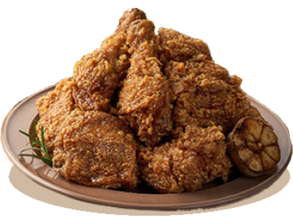

Korean fried chicken is crispy, juicy, and coated in a sweet, spicy gochujang sauce. Double-fried for extra
crunch, it’s a bold and addictive treat in every bite.
Kyochon 1991
Honey Garlic Chicken
You can taste the sweet honey garlic flavor and the light spicy flavor in every
bite.
The
fried chicken is also very crispy. Korean Honey Garlic Chicken is a deliciously crispy and flavorful dish
that combines the bold flavors of Korean cuisine with the sweet and savory kick of honey and garlic.

Nanda Chicken
Soy Garlic Chicken
This soy sauce garlic fried chicken is really not to be missed! The skin is
crispy, and the
sauce is sweet, salty, and garlicky. It is super delicious and is perfect with rice and beer. The taste is
not spicy and is easy to accept. It is a great introduction to Nanda Chicken for the first time.
Jinjja Chicken
K Cheese Platter Chicken
K-Cheese Platter is a paradise for cheese lovers! There are fried chicken wings
and
drumsticks to choose from, plus French fries and K-Pop Chicken, a large plate of mozzarella + nacho cheese
with a full texture. The aroma of cheese and the crispiness of fried chicken are perfectly blended. You
can't stop eating it one bite after another.